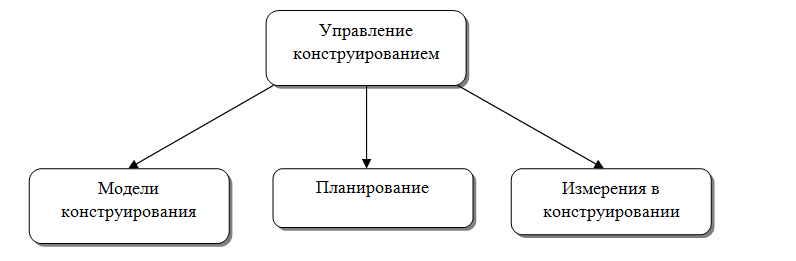

Конструирование ПО - создание работающего ПО с привлечением методов верификации, кодирования и тестирования компонентов. К инструментам конструирования ПО отнесены языки программирования и конструирования, а также программные методы и инструментальные системы (компиляторы, СУБД, генераторы отчетов, системы управления версиями, конфигурацией, тестированием и др.)
Задачи конструирования:
Человеческий мозг не может удерживать более 7 объектов в один момент времени. Это влияет на все аспекты конструирования. Следует автоматизирвоть процессы верификации (проверки) и тестирования программных систем.
Минимизация сложности достигается путем создания более простых модулей, прописывания простых и понятных рекомендаций в стандарте предприятия, собственном стандарте, либо стандарте языка. Тем самым мы уменьшаем порог входа. Следовательно, стоимость труда. Простой и легко читаемый код проще сопровождать на всех этапах конструирования. Его проще тестировать и проводить верификацию, сопровождать и вводить новый функционал.
В случае сложного алгоритма необходимо локализовать сложные участки. Здесь хорошо подходит объектно-ориентируемый подход. Этот способ ограничивает интерфейс, инкапсулируя сложные участки внутри себя. Что упрощает взаимодействие разных объектов между собой и понимание системы в целом. Локализует все возможные ошибки в одном месте, чем упрощает тестирование системы.
Конструирование зависит от внешних стандартов, связанных с языками программирования, используемым инструментальным обеспечением, техническими интерфейсами и взаимным влиянием Конструирования программного обеспечения и других областей знаний программной инженерии (в том числе, связанных дисциплин, например, управления проектами). Стандарты создаются разными источниками, например, консорциумом OMG – Object Management Group (в частности, стандарты CORBA, UML, MDA, …), международными организациями по стандартизации, такими как ISO/IEC, IEEE, TMF, …, производителями платформ, операционных сред и т.д. (например, Microsoft, Sun Microsystems, CISCO, NOKIA, …), производителями инструментов, систем управления базами данных ит.п. (Borland, IBM, Microsoft, Sun, Oracle, ...). Понимание этого факта позволяет определить достаточный и полный набор стандартов, применяемых в проектной команде или организации в целом.
Определенные стандарты, соглашения и процедуры могут быть также созданы внутри организации или даже проектной команды. Эти стандарты поддерживают координацию между определенными видами деятельности, группами операций, минимизируют сложность (в том числе при взаимодействии членов проектной группы и за ее пределами), могут быть связаны с вопросами ожидания и обработки изменений, рисков и вопросами конструирования для проверки и дальнейшего тестирования.

Модели конструирования определяют комплекс операций, связанные с общим жизненным циклом разработки. Некоторые стандарты жизненного цикла, по своей природе, являются ориентированными на конструирование – например, экстремальное программирование (XP- eXtreme Programming). Некоторые рассматривают конструирование в неразрывной связи с проектированием (в части моделирования), например, RUP (Rational Unified Process).
Некоторые модели являются более линейными с точки зрения конструирования ПО. К ним относятся, например, водопадная и поэтапная модели жизненного цикла. Эти модели рассматривают конструирование как деятельность, которая начинает проводиться только после завершения определенных обязательных к выполнению работ, включающих детальное определение требований, подробный дизайн и детальное планирование. Более линейные подходы стараются подчеркнуть действия, предваряющие конструирование (т.е. требования и дизайн) и создать более четкое разделение между такими различными типами деятельности. В таких моделях основным содержанием конструирования может быть кодирование.
Другие модели более итеративны, к ним относятся – эволюционное прототипирование, экстремальное программирование и Scrum. Эти подходы сходятся к рассмотрению конструирования как деятельности, которая ведется одновременно с другими видами работ по созданию программного обеспечения и пересекаясь с ними, включая определение требований, проектирование и планирование. Эти подходы смешивают проектирование, кодирование и тестирование, часто рассматривая их комбинацию как конструирование.
Выбор метода (методологии) конструирования значим для всей конструкторской деятельности и необходимых условий ее осуществления, определяя порядок соответствующих операций и уровень выполнения заданных условий перед тем как начнется конструирование или составляющие его действия. Например, модульное тестирование в ряде методов является частью работ, после написания соответствующего функционального кода, в то время, как ряд гибких практик, например, XP требуют написания Unit-тестов до того, как пишется соответствующий код, требующий тестирования.
Планирование конструкторской деятельности определяет порядок, в котором создаются компоненты и другие активы данной области знаний (фазы деятельности), проводятся работы по обеспечению качества получаемого программного обеспечения, распределяются задачи и соответствующие ресурсы, в том числе, определяются назначения/отображения работ конкретным инженерам-программистам, членам проектной группы. Все это, конечно, происходит, следуя правилам, определяемым используемым методом (методологией, практиками и т.п.).
Большая часть результатов, да и самой деятельности по конструированию программного обеспечения, может быть измерена, в том числе - количественно. Это и исходный разработанный код, и модифицированный объем кода, и степень повторного использования, и многие другие характеристики. Эти измерения, или как их еще принято называть – результаты аудита кода и метрики кода, несут большую пользу как для оценки рисков и качества так и для управления конструированием и программными проектами, в целом.
Последнее время, большое внимание многие профессиональные разработчики, то есть инженеры-конструкторы программного обеспечения, выделяют рефакторинг кода, как методы его реструктурирования, призванные без изменения содержания (то есть функциональности и функциональной целостности) обеспечить решение задач минимизации сложности, готовности к изменениям (гибкости), прозрачности документирования и многих других актуальных аспектов конструирования. Применение измерений, в частности, метрик, позволяет определить необходимость внесения таких изменений, проведения рефакторинга.
Вне зависимости от четкости выделения деятельности по проектированию, как таковой, практически всегда на стадии конструирования приходится заниматься и вопросами детального дизайна системы.
Детали деятельности по проектированию на стадии конструирования в основном те же самые, что и описанные в области знаний “Проектирование программного обеспечения” (Software Design). Отличие заключается в большем внимании деталям.
Языки конструирования включают все формы коммуникаций, с помощью которых человек может задать решение проблемы, выполняемое на компьютере.
Простейший тип языков конструирования – конфигурационный язык (configuration language), позволяющий задавать параметры выполнения программной системы.
Инструментальный язык – язык конструирования из повторно-используемых элементов (обычно строится как сценарный язык), выполняемый в соответствующей среде.
Язык программирования – наиболее гибкий тип языков конструирования. Содержит минимальный объем информации о конкретных областях приложения и процессе разработки, требуя больше всего усилий на изучение и наработку опыта для эффективного применения при решении конкретных задач.
Существует три основных вида нотаций используемых при определении языков программирования:
Лингвистические нотации характеризуются, в частности, использованием строк текста, содержащих специализированные “слова”, представляющие сложные программные конструкции, и комбинируемые в шаблоны, напоминающие предложения, построенные в соответствии с определенным синтаксисом. В случае корректного использования таких нотаций, каждая получаемая строка обладает строгой смысловой нагрузкой (семантикой), обеспечивающей интуитивное понимание того, что будет происходить, когда будет выполняться программное обеспечение, построенное с использованием такого языка конструирования.
Формальные нотации являются менее интуитивными, чем лингвистические, и часто базируются на точных формальных (математических) определениях. Формальные нотации конструкций и формальные методы являются ядром практически всех форм системного программирования, точнее – поведения систем во времени. Такие нотации обеспечивают наибольшую готовность получаемого кода к тестированию, что намного важнее, чем просто возможность отображения на обычный человеческий язык. Формальные конструкции также используют точный метод определения комбинаций применяемых символов, что позволяет избежать неоднозначностей, присущих конструкциям естественных языков.
Визуальные нотации наименее связаны с текстово-ориентированными подходами, предполагая непосредственную интерпретацию визуальных конструкций в процессе исполнения описываемой логики. При этом логика в визуальных нотациях задается расположением соответствующих визуальных сущностей, ответственных за те или иные операции и структуры данных.
Сегодняшние работы (и их состояние) в области архитектур и приложений, управляемых моделями, в первую очередь - OMG MDA (Model-Driven Architecture), UML (Unified Modeling Language), Microsoft DSL (Domain-Specific Language), направлены на то, чтобы использовать ту или иную визуальную нотацию, базирующуюся на мета-моделях, в качестве инструмента, применяемого и для определения функциональной логики системы.
Другая область стандартов, направленных на применение визуальных нотаций для описания функциональности – Business Process Management Notation (BPMN) и связанный с ней язык Business Process Execution Language, построенный на базе XML. Таким образом, область обоснованного применения визуальных нотаций для конструирования программных систем качественно расшириться и, не исключено, мы станем свидетелями de-facto формирования новой категории нотаций, соглашений и смешанных типов языковых средств, предназначенных для конструирования программного обеспечения как естественного продолжения проектирования.
Практика конструирования программного обеспечения показывает активное применение следующих соображений и техник:
При конструировании используются две формы тестирования, проводимого инженерами, непосредственно создающими исходный код:
Главная цель тестирования в конструировании уменьшить временной разрыв между моментом проявления ошибок, имеющихся в коде, и моментом их обнаружения. Во многих случаях, тестирование в конструировании производится после того, как код написан. В ряде случаев, тесты пишутся до того, как создается код(TDD).
Тестирование в конструировании обычно включает подмножество тестовых методик, описанных в области знаний “Тестирование программного обеспечения” (Software Testing). Например, тестирование в конструировании обычно не включает системного тестирования, нагрузочного тестирования, usability-тестирования (оценки прозрачности использования) и других видов тестовой деятельности.
Задачи, связанные с повторным использованием в процессе конструирования и тестирования, включают:
Существует ряд техник, предназначенных для обеспечения качества кода, выполняемых по мере его конструирования. Основные техники обеспечения качества, используемые в процессе конструирования, включают:
Выбор и использование конкретных техник часто диктуется стандартами (внутренними и внешними), используемыми проектной командой, а также зависят от опыта и подготовленности специалистов, занимающихся конструированием кода.
Деятельность по обеспечению качества в конструировании отличается от других операций по обеспечению качества. Основное отличие заключается в фокусе на программном (исходном) коде и других артефактах (активах), тесно связанных с кодом, в частности, детальных моделях.
Одна из ключевых деятельностей, осуществляемых в процессе конструирования, - интеграция отдельно сконструированных операций (процедур), классов, компонентов и подсистем (модулей). В дополнение к этому, некоторые программные системы нуждаются в специальной интеграции с другим программным и аппаратным обеспечением.
Кроме упомянутых аспектов интеграции, к обсуждаемым интеграционным вопросам конструирования относятся: